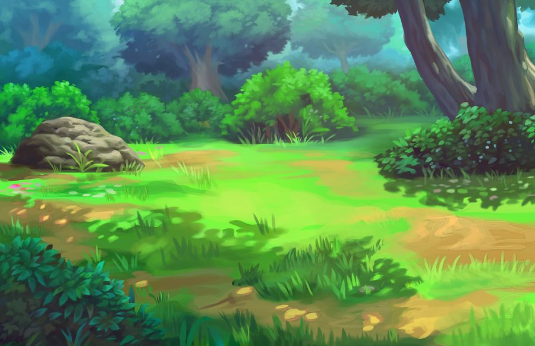
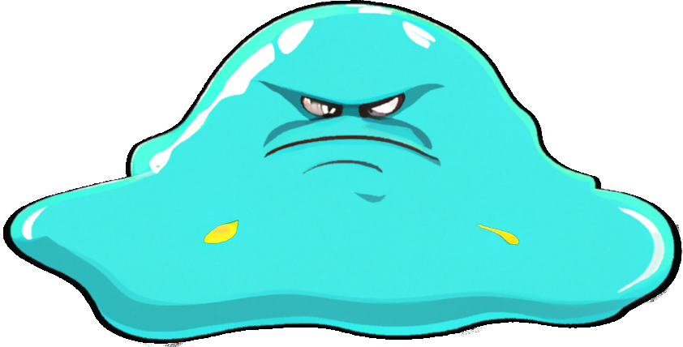

<div style="position: relative;">
  <!-- Background image: sert de contexte à la scène -->
  

  <!-- Conteneur de Slime avec animation -->
  <!-- Animation CSS appliquée ([class.wobble-hor-top]="css_hit")-->
  <div style="width: fit-content; position: absolute; top: 250px; left: 350px;" [class.wobble-hor-top]="css_hit">
    <!-- Slime avec plusieurs animations Angular -->
    <!-- Animation Angular "Death" ([@death]="ng_death"), "Attack" ([@preAttack]="ng_preAttack" [@attack]="ng_attack"), ...-->
    
  </div>
</div>

<!-- Boutons pour contrôler les animations -->
<div style="padding: 20px">
  <!-- Bouton pour générer Slime -->
  <button *ngIf="!slimeIsPresent" mat-raised-button color="accent" (click)="spawn()">Spawn</button>
  <!-- Bouton pour animer la mort -->
  <button *ngIf="slimeIsPresent" mat-raised-button color="accent" (click)="death()">Death</button>
  <!-- Bouton pour animer l'attaque -->
  <button *ngIf="slimeIsPresent" mat-raised-button color="accent" (click)="attack()">Attack</button>
  <!-- Bouton pour animer "Hit"-->
  <button *ngIf="slimeIsPresent" mat-raised-button color="accent" (click)="hit()">Hit</button>
  <button *ngIf="slimeIsPresent" mat-raised-button color="accent" (click)="bounceShakeFlip()">Bounce/Shake/Flip</button>
</div>